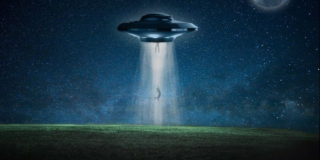

Abducción
Desde hace 3, 4 meses que tengo pesadillas. Siempre es igual. Me despierto en una camilla donde unos seres con formas extrañas me tocan de arriba abajo emitiendo sonidos ensordecedores intentando replicar mis gritos. Siempre tengo miedo, pánico y dolor, mucho dolor. Esto parece durar horas hasta que una voz empieza a sonar en mi cabeza dando palabras inteligibles. Luego despierto empapado en sudor. Siempre despierto a la misma hora.
Culpa de esto fui a la psicóloga y a un psiquiatra. No solucionaron mi problema, lo único que conseguí es que ahora estoy medicado. La verdad es que escribo esto porque la semana pasada intentamos un método distinto con la psicóloga. Me explicó cómo funciona la hipnosis, y que a veces puede ser un tratamiento que da frutos, y otras veces puede quedar en la nada. Yo acepté, no podía perder nada intentándolo. Así entré en trance y empezó una serie de preguntas. Al finalizar ella estaba horrorizada por lo que acababa de escuchar. Me pasó la grabación de toda la sesión y nunca más nos volvimos a comunicar. He estado pensando en ello, y creo que escribo y transcribo este texto para encontrar algún fin o descargo a todo esto que me está pasando.
“Veo una luz entrando por la ventana. Es tan potente que parece de día. Luego empiezo a flotar sin poder mover un músculo. La luz se intensifica hasta dejarme ciego por varios minutos. Cuando recupero la vista, estoy atado a una especie de mesa. Es cálida, de color gris, como si su textura fuera un hueso. La mesa parece un hueso. Unos seres peludos de ojos rojos, pequeños, y con dientes en lugar de dedos en las manos se paran a mi alrededor. Empiezan a tocarme sin cesar. Sus dientes-dedos me lastiman, parecen dejarme mordidas en las piernas y brazos. Grito, y al hacerlo, ellos también. Mi cuerpo empieza a introducir adrenalina a mi sangre. Me desespero. En lo que empiezo a moverme, logro desatar un brazo…
 Decides intentar desatarte por completo... Decides intentar pegarle a uno de los seres...Así que aproveché para intentar desatarme por completo. Logré desatar mi otro brazo. Cuando esto sucedió, todos dieron un paso hacia atras, se callaron y abrieron la boca. Ante la oportunidad, aproveché para terminar de liberarme de mis ataduras e intentar escapar de la situación. Cuando me bajé de la mesa esas cosas empezaron a temblar, como si tuvieran un ataque de epilepcia o algo así. La luz de la habitación se volvió roja. Algo estaba mal, así que salí corriendo de allí.
Salí por el mismo lugar que estos seres habían entrado. Resultó ser un laberinto el lugar. No sabía donde estaba, no sabía a dónde iba, no sabía que estaba pasando ¿Quiénes eran? ¿Qué querían? No habia tiempo para eso, necesitaba salir de ese lugar. Una voz empezó a decir palabras en mi cabeza en diferentes idiomas. Así hasta que dijo una palabra que logré etender en español: "Hola." En ese momento me detuve. Siguió hablando: "Entonces entiendes este idioma. Bueno, no esperábamos que puedieras escapar, y no lo has hecho. Estás en nuestra nave, y vamos a lograr todo lo que nosotros queremos hacerte. Así que no tienes más opción que rendirte. Podemos hacerlo esto en forma sencilla, vos siguiendo mis instrucciones, o a la fuerza. Es como vos elijas."
Decides hacerle caso a la voz... Decides buscar la forma de escapar...Decido darle un puñetazo al alien que tenía mas cerca. En ese momento todos se hacen hacia atras. Una voz empieza a sonar en mi cabeza: "Eres peligroso, pero nosotros más. Estás a nuestra merced." En lo que me dice esto me desato y levanto de la mesa. Continua: "Estás en nuestra nave, y vamos a lograr todo lo que nosotros queremos hacerte. Así que no tienes más opción que rendirte. Podemos hacerlo esto en forma sencilla, vos siguiendo mis instrucciones, o a la fuerza. Es como vos elijas."
 Decides hacerle caso a la voz...
Decides buscar la forma de escapar...
Decides hacerle caso a la voz...
Decides buscar la forma de escapar...
Me quedo quieto ante tal frase. Luego digo: "Está bien, voy a hacerte caso." "Perfecto.", me responde esa voz. Luego la luz del lugar me ciega de nuevo. Caigo inconciente. Despierto en la misma mesa de hace unos momentos. "No vas a recordar nada de esto, o no deberías. Estamos aquí para inverstigar a su especie. Son tan curiosos, vivos. No lo saben, pero rebosan con la fuente de energía más importante del universo, y la más potente también: las emociones. Estamos en el corazón de esta realidad buscando la forma de extraerles toda esa energía..." Ante el dolor provocado por los estos seres peludos, me desmayo..."
¿Quieres volver a intentarlo?Decido seguir corriendo por la nave, tal vez haya alguna forma de salir, alguna cápsula de escape, o algo de por el estilo. La voz en la cabeza me dice "Perfecto, va a ser de la forma divertida." Acto seguido todo el lugar cambia de consistencia. Lo que antes era piso sólido, ahora pasa a tener una textura parecida al lodo. Minutos más tarde estoy hundido hasta los hombros en el piso. Una de las criaturas del comienzo aparece caminando por el pasillo. Llega a mí y abre su boca. De allí surge la misma voz que hace unos momentos sonaba en mí cabeza: "Voy a morderte la cabeza, y de esa forma, extraerte el cerebro. Te vamos a disecar para estudiarte. Para no dejar rastros, vamos a usar tu ADN para crear un clon, implantarle tus recuerdos y soltarlo en este planeta, a vivir tu patética existencia." Luego siento un inmenzo dolor en la cabeza...
¿quieres volver a intentarlo?Sobre el Autor
Jose María Torres
Nació en Uruguay, Montevideo, en 1992. Se recibió de abogado en la Universidad Nacional de Buenos Aires donde empezo a escribir historias para la revista universitaria. Hoy en día cuenta con más de 10 libros excritos, entre los que se encuentran las novelas: "Mil Amores por los que No Morir", "Tu vida vale más que la mía", y "Flores para pétalos caídos".